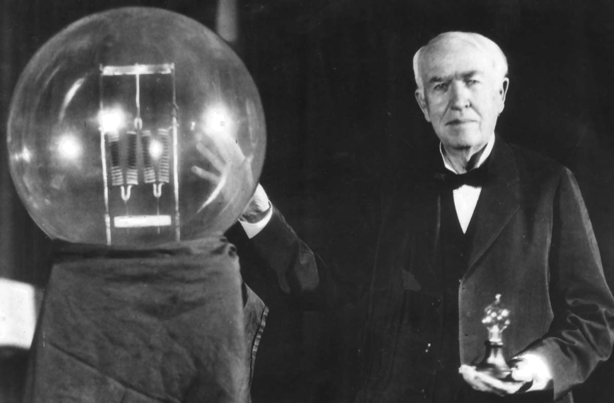
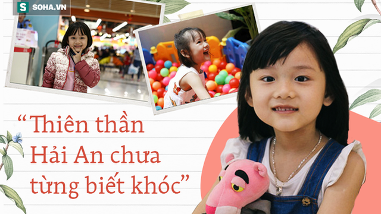

ĐI TÌM LẼ SỐNG
Mỗi con người sinh ra đều không thể tự quyết định cho riêng mình một số phận hay một đích đến cụ thể, tất cả đều ngẫu nhiên và hoàn toàn khác nhau. Nhưng điều khiến cho chúng ta trở nên khác biệt và là cá thể độc nhất vô nhị đó là bản thân mỗi người đã sống như thế nào, đã làm được những gì và đâu là điều tốt đẹp nhất mà bản thân đã cống hiến cho đời. Không những vậy ý nghĩa cuộc sống của mỗi người mỗi khác, nó có thể thay đổi theo từng ngày, từng giờ mà chỉ tự mình mới có thể trả lời và thực hiện chính nhiệm vụ mà cuộc sống đã đặt ra.
Nếu một ngày có ai đó hỏi tôi, phải chăng một cuộc sống thật sự có ý nghĩa là khi bạn đã đạt được vài thành tựu hay thành công ở một lĩnh vực nào đó? Câu trả lời của tôi sẽ là "Có". Nhưng chưa đủ. Vậy còn giá trị của những người chưa thành công và chưa hạnh phúc thì như thế nào?
Vốn dĩ ý nghĩa trong cuộc sống về thành tựu luôn chứa đựng giá trị theo sự hiện hữu và giá trị theo phẩm cách của một con người. Chẳng hạn, có biết bao người trên đất Việt đã nổ lực không ngừng nghỉ để ngày một rút ngắn khoảng cách chạm tới cái đích mà họ đã vạch ra, thậm chí là những phút giây đánh đổi bằng mồ hôi, xương máu.
Điển hình như Nguyễn Công Phượng, chàng trai đã có những đóng góp không nhỏ trong việc giúp bóng đá nước nhà khởi sắc với những bàn thắng rực rỡ. Người người vinh danh anh, hâm mộ anh và chính anh đã có được một vài thành tựu vang dội khi tuổi đời còn rất trẻ. Còn những ngày anh chưa đạt đến đỉnh vinh quang thì sao? Để vào lò đào tạo trẻ của câu lạc bộ bóng đá Sông Lam Nghệ An, anh phải trải qua các kì thi kiểm tra năng lực gắt gao, nhưng anh đã bị hội đồng đánh trượt vì không đủ sức khỏe và kỹ thuật
[1]. Những ngày đầu anh chưa thành công, chẳng ai biết anh là ai, và hành trình kiếm tìm giá trị bản thân lúc ấy đầy rẫy sự khó khăn và thách thức, thậm chí là những tai nạn “bỏ nghề”.
Thế nhưng, với tính cách của mình lại không cho phép bản thân dễ dàng bỏ cuộc như vậy, bản thân anh phải có trách nhiệm với con đường mà anh đã chọn. Sau đó, anh không ngừng cải thiện bản thân và vươn lên bằng cách gia tăng tập luyện, học hỏi những kỹ thuật mới từ những người đi trước giàu kinh nghiệm. Bên cạnh đó là các màn thi đấu quyết liệt để áp dụng những bài học kinh nghiệm vào thực tiễn, để rồi cải thiện, và cứ thế tạo thành vòng lặp giúp bản thân vượt trội hơn. Suy cho cùng, chính hành trình đầy mệt nhọc ấy đã giúp anh tìm được nhiều thứ hơn là mất. Khi anh đã nhận ra được năng lực và giới hạn của bản thân mình cũng là lúc anh biết được mình sẽ có những kế hoạch tập luyện và nổ lực như thế nào trong thời gian sắp tới. Từ đó, anh không chỉ vượt qua các kì thi năng lực của câu lạc bộ, mà còn là những cuộc thi quốc gia, quốc tế về sau, trở thành niềm tự hào của bóng đá Việt. Ngoài Công Phượng ra còn rất rất nhiều người khác đã, đang nổ lực như vậy. Tất cả những gì họ làm hoàn toàn có ý nghĩa, và ý nghĩa đó không nhất thiết phải là thành tựu, mà quá trình trải nghiệm sâu sắc về thể xác lẫn tinh thần cốt cách nhằm bức phá chính mình cũng là một ý nghĩa mà cuộc sống này ban tặng - Đó là phẩm cách con người, thật đáng trân trọng!

Một trường hợp khác, nhà bác học đại tài Edison – người đã làm khoảng 10.000 thí nghiệm để tìm ra dây tóc bóng đèn và cũng thất bại 10.000 lần, nhưng sau số lần thất bại ấy, ông tích lũy thêm nhiều tri thức mới cho mình: Một lần thất bại đồng nghĩa với việc rút ngắn khoảng cách đi đến thành công, cũng như các trường hợp khác nhau có thể xảy ra của những vật liệu mà ông đang kiếm tìm. Sau 10.000 lần thử nghiệm, nhà bác học cuối cùng tìm ra được vật liệu mà mình cần, cuối cùng ông đã đến cái đích của sự hoàn thiện. Nếu không có những thất bại hay những thời khắc suy nghĩ tích cực và niềm đam mê dồi dào, chắc gì Edison và nhân loại đã thấy được sự vĩ đại của bóng đèn? Cuối cùng, vật liệu dây tóc bóng đèn và thành công vang dội về sau của ông đã cho mọi người thấy cuộc sống đam mê nghiên cứu của ông ý nghĩa đến dường nào. Và những tư tưởng, phẩm chất cao quý của một nhà khoa học là không ngừng cống hiến sức lực của mình cho đời mãi là điều tối quan trọng xuyên suốt thời gian lịch sử.
Một cuộc sống ý nghĩa không chỉ dừng tại đó, mà còn là
những tình yêu thương giữa người dành cho người. Viktor E. Frankl - Người đã có một cuộc sống đầy khắc khổ đớn đau trong trại tập trung Đức quốc xã và buộc phải quyết định xem chính cuộc sống của mình có ý nghĩa hay không. Sự sống sót của ông không chỉ hàm đựng ý chí sống với bản năng sinh tồn mạnh mẽ, mà còn là những hành động khoan dung đầy tính nhân văn giữa ông với những bệnh nhân đang nằm trên ván gỗ èo ọp cùng đống rơm đầy mùi hôi bẩn. Dẫu nhiều lần có cơ hội trốn thoát, nhưng ba lần bảy lượt ông không đành lòng rời đi. Ông đã chọn ở lại cùng những bệnh nhân của mình để chăm sóc, động viên và san sẻ những ý niệm hạnh phúc để giúp họ vượt qua cơn đau hiện tại, hoặc chí ít là tự hào về những nổ lực của bản thân trước khi ra đi mãi mãi.
Trở về hiện thực, tình yêu thương luôn đi chung với trách nhiệm, chúng ta dễ dàng nhìn thấy hình ảnh này ở những mái nhà gia đình, nơi mà ba mẹ luôn dành trọn những điều tốt nhất, yêu thương sâu sắc nhất cho những đứa con của mình. Họ phải bươn chải kiếm sống hàng ngày, giấu đi những nỗi đau thương, mệt mỏi, thậm chí là vết nứt tinh thần chỉ để đem lại hạnh phúc và niềm vui cho chính con họ. Đời nào ba mẹ không trông chờ con cái mình trưởng thành, lớn khôn và không thành công cơ chứ! Vì con, họ phải sống hết mình, phải trở thành một người tốt, tốt hơn qua từng ngày và họ đã có một cuộc đời thật ý nghĩa. Ý nghĩa có thể bao gồm nỗi bất hạnh hay sự đau đáu mà họ đang gánh phải, nhưng nó lại đẹp và ấm áp đến dường nào khi đứa trẻ nhận được từ ba mẹ của mình. Ngược lại, những đứa trẻ khi nhận được tình yêu thương dồi dào và sự dạy dỗ tử tế từ ba mẹ, chúng sẽ không ngừng phát triển về mặt cảm xúc lẫn tư duy, trở nên yêu đời, lạc quan và tốt bụng hơn. Song song, những đứa trẻ ấy sẽ yêu thương ba mẹ chúng một cách ngọt ngào nhất, ngây thơ nhất. Một ngày đủ lớn khôn, chúng sẽ nhìn nhận ra được nỗi vất vả mà ba mẹ chúng đã gánh phải, chúng sẽ tự biết bản thân mình phải có trách nhiệm báo đáp ơn nghĩa cho đấng sinh thành của mình cho dù thế nào đi chăng nữa.
Cuộc sống này vốn dĩ đã khắc nghiệt và đầy rẫy sự cám dỗ, nhưng trong sự hỗn độn ấy, đâu đó ló lên những nụ cười hạnh phúc, những cái ôm ấm áp giữa dòng người xô bồ bởi những người thương. Lúc ấy, dường như bản thân chúng ta được tiếp thêm nhiều động lực sống và cảm xúc tích cực, từ đó sống trách nhiệm hơn và quyết tâm hơn để có thể làm được nhiều điều ý nghĩa lớn lao, hoặc giản đơn là quan tâm, chăm sóc người thương thật tốt.
Yêu thương xuất phát từ mọi nơi, mọi địa vị, mọi đẳng cấp xã hội và luôn luôn thuộc về tất cả mọi người. Hơn hết, ai ai cũng có quyền yêu, được yêu và san sẻ con tim của chính mình.
Có những người đã mất nhưng họ đã từng có một thanh xuân tuổi trẻ nồng nhiệt và kho tàng tri thức sống động, họ đã khám phá ra những khả năng tiềm ẩn của chính họ, rồi hiện thực hóa và hoàn thành mục đích, ý nghĩa của việc tồn tại.
Thế nhưng,
có những người vẫn còn tồn tại trên cõi đời này dưới những nghĩ suy chán nản, vô định, chây lỳ với các tác nhân ngoại cảnh và thật sự từ bỏ cuộc sống. Họ dấn thân vào con đường ma túy, nghiện ngập, cờ bạc, một hình thái tệ hại tột độ, và Frankl đã gọi đó là Hệ quả của "Trạng thái tồn tại chân không".
Nếu cuộc sống ban tặng cho ta những khó khăn, đau khổ hay những bi kịch nhằm thúc đẩy phát triển khả năng tiềm tàng của bản thân, thì cứ quả cảm để vượt lên trên số phận và tạo ra bước ngoặt cuộc đời. Bởi lẽ không một nỗ lực nào là lãng phí, không một nỗi đau nào là vô nghĩa,
thông qua những đau khổ, ta sẽ tìm thấy được ý nghĩa trong cuộc sống của chính mình.

"Con muốn khi mất đi, những bộ phận vẫn sống trên cơ thể người khác", một câu chuyện đầy cảm động về bé Hải An hiến giác mạc sau khi qua đời vì u cầu não xâm lấn
[2]. Những cơn đau hành hạ thể xác bé ngày qua ngày, hay những nỗi đau thương da diết đến cắt ruột cắt da của bố mẹ khi tận mắt chứng kiến ngày con mắc phải căn bệnh cho đến thời điểm con rời đi. Nỗi thống khổ này ai đau thấu! Thế nhưng, vượt lên trên tất cả là tư tưởng mạnh mẽ của bố mẹ và hành động tự do, sự ra đi đầy ý nghĩa của bé. Dù người đã mất nhưng nhịp đập con tim đầy sức sống ấy vẫn đang trong lồng ngực của một bạn trẻ nào đó, và đã giúp họ nhìn thấy ánh sáng cuộc đời của mình. Thời gian trôi qua, nỗi đau dần giảm đi nhưng quá khứ can đảm chấp nhận đau khổ, đối đầu thử thách của bé Hải An lẫn bố mẹ và hành động cao thượng đều có ý nghĩa đến tận phút giây cuối cùng, thậm chí là vĩnh cữu.
Viktor E. Frankl đã từng nói: “Hãy sống như thể bạn đang được sống lần thứ hai và đang sắp phạm phải sai lầm như đã từng phạm phải lần đầu tiên”.
Có những thất bại làm ta gục ngã, nhưng ta vẫn còn cơ hội để đứng dậy làm lại từ đầu. Miễn là chưa chết, hãy cứ thử, cứ làm, đừng từ bỏ cơ hội tuyệt vời nhất cho chính bản thân mình trưởng thành trong những hoàn cảnh đau thương, khắc khổ và đầy thách thức. Dù có ra đi vì tuổi già hay vì những căn bệnh nan y không thể chữa, thì việc ra đi đó phải có ý nghĩa, huống chi ta còn vô số lần để thực hiện những điều có ích ấy, phải không?
Ta hay cho rằng cuộc đời méo mó.
Sao không tròn ngay tự lương tâm.
Đất ấp ôm cho mọi hạt nảy mầm.
Những chồi non tự vươn lên tìm ánh sáng.
Nếu tất cả đường đời đều trơn láng.
Chắc gì ta đã nhận ra ta.
Ai trong đời cũng có thể tiến xa.
Nếu có khả năng tự mình đứng dậy.
Hạnh phúc cũng như bầu trời này vậy.
Không chỉ dành cho một riêng ai!
- Lưu Quang Vũ -
Cuộc sống này vốn dĩ là hành trình không hồi kết, và ý nghĩa cuộc sống của chúng ta cũng nằm trên hành trình ấy, khi mà ta nổ lực cho mục tiêu hiện tại và tương lai. Nếu ta kiên trì và không ngừng góp nhặt những tri thức, những trải nghiệm trên đường đời thì một ngày nào đó, ta cũng sẽ trả lời được câu hỏi mà mình đã và đang cần.
Vậy thế nào là một cuộc sống ý nghĩa?
Cuộc sống ý nghĩa hay không là phụ thuộc vào những suy tư và cảm nhận của mỗi người tại mỗi thời điểm nhất định mà không hề có một câu trả lời hay thước đo nào là chuẩn xác. Thế nhưng, hình ảnh cơ bản nhất và dễ thấy nhất của một cuộc sống ý nghĩa là những gì ta học hỏi được để rồi lớn khôn qua từng thử thách, bi kịch khác nhau; hạnh phúc khi có người để yêu và bản thân mình được yêu; phẩm chất cao đẹp (chẳng hạn như cuộc sống của Frankl và bé Hải An) và những thành công mà bản thân đang nỗ lực vươn đến.
Cuộc sống tuy ngắn ngủi, nhưng nó có ý nghĩa hay không là do chính bạn tạo nên. Đừng kiếm tìm định nghĩa "cuộc sống ý nghĩa" ở đâu xa nữa mà hãy nhìn gần lại, vì vốn dĩ chính bạn đã là một sinh thể ý nghĩa khi được sinh ra để làm những điều có nghĩa cho gia đình, bạn bè, xã hội và đặc biệt là cho chính bản thân bạn.